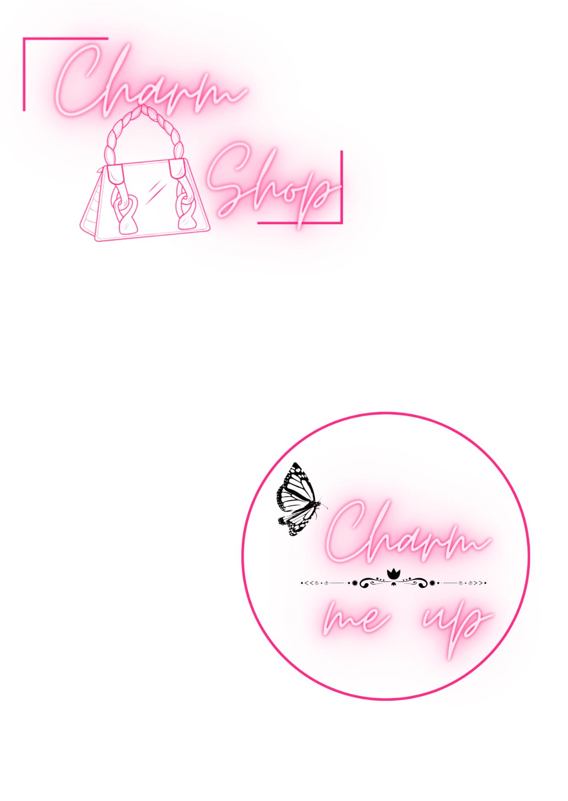

-
Movies
Most of my favorite things to do are usually activities that help me escape reality. Watching movies happens to be one of my favorites. I prefer watching movies sometimes because I can multitask while working, cooking or engaging in any activity that could allow a shared attention.

Gossip girl is my current favorite show to watch although it's not a movie per say. The series has been an escape for me over the last few weeks and I am dreading continuing because I'm almost at the end of the cuurent season as it's the season before the last :/
Stream gossip girl on netflix and thank me laterrr! -
Reading
I love reading!
I took a very long break from reading and got back to it last year. Colleen Hoover has got to be my absolute favorite author as at now! Her books always find a way of taking you out of this world into an entirely different one, carefully currated by her.
This the first book of hers I read that drew my attention to her work and I have loved every other book of hers I've read after this.
-
Pinterest

I can spend alll day on pinterest. I personally think I get my motivation from pinterest. From my career, to my business, to fashion. I will always go to pinterest
I came across this post on pinterest today and I honestly cannot wait to be a full-time web developer
-
Prayer
Prayer of course! I will pray anywhere at anytime, for anything. I feels like a super power sometimes becausse I'm in the presence of God laying my problems,getting answers, talking to my father without anyone noticing.
*side note* I have so much hope in this year <3 -
Business
Of course I have a business haha.
I haven't restocked bags in a while, but please follow my business page @charmshopgh and my lash page@charm.meupp.
Putting ideas together, and planing towards my business is one thing I enjoy doing. It takes my out of this wold into a creative one, allowing me to explore my creativity at its best.